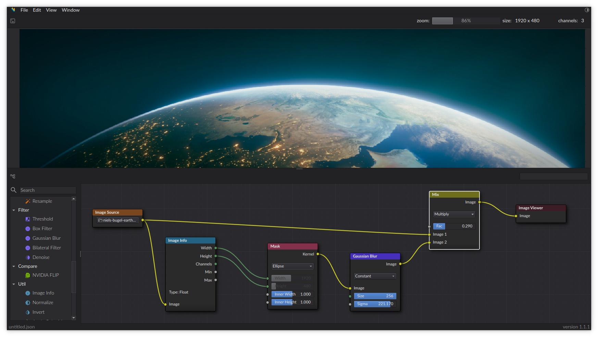

- Generated by
 1.9.1
1.9.1
|
NITRO
v1.1.1
|

Welcome to the documentation page of NITRO. You can find all relevant information in the menu on the left.
NITRO is a powerful tool for building complex image processing routines. Instead of needing to modify source code or scripts to process images in different ways, you can use this visual node editor to do that instead. The project was developed with extendability in mind, making it easy to add your own types nodes, and widgets. For more information on this, read the docs. The UI was inspired by Blender's Shader Editor
The project was originally developed for my Master thesis at the University of Groningen. That is also the origin of the name NITRO: Niels' Image-processing Thesis on Reconstruction Operations.
To get a local copy up and running, download the latest release. Once downloaded, you should have a file called nitro-x86_64.AppImage. You can run this using:
Alternatively, you can read through the Installation Instructions to build the project from the source code.
The project is still in development and can be considered in early-alpha. As such, I am still working hard on fixing bugs and adding new features. If you encounter any, please feel free to create an issue.
Nodes can be spawned via the side menu (drag and drop). Connections can be made between nodes via drag and drop as well.
A few useful shortcuts:
ctrl+shift while clicking on a node will spawn a viewer node for said node.shift+a will open a menu that allows for node spawning.f will attempt to create a connection between them.shift+f will enter first person mode in the 3D viewer dock.This project is licensed under the MIT License - see the LICENSE.md file for details